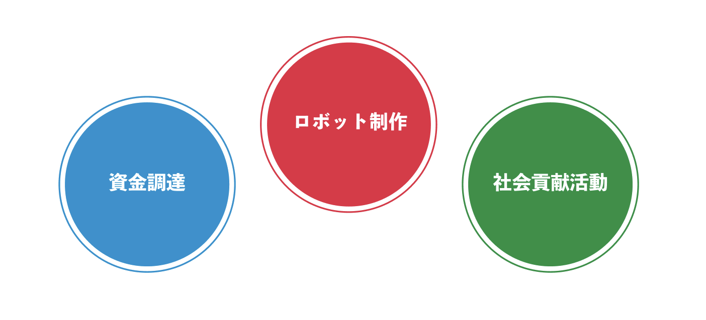

The FIRST® Robotics Competition (FRC) is the world's largest roboticsbr
competition, attracting over 100,000 participants. As of February 2024,
it has brought together more than 3,200 teams from 26 countries.
Competitors design and build their own robots to compete in this event.
The non-profit organization based in the United States,
FIRST® (For Inspiration and Recognition of Science and Technology),
operates various events, including the FIRST® Robotics Competition (FRC).
This organization is dedicated to providing a platform for young people to engage with
and learn about robotics engineering, championing the philosophy of "More Than Robots."
This phrase signifies FIRST®'s goal to not only focus on technological education and
competition but also to foster human qualities such as teamwork, creativity,
and leadership through these activities.
Three elements of the FRC
Robot Production
The robots constructed for the competition are challenging to build individually,
with dimensions reaching up to 1 meter in width and length and weighing as much as 50 kilograms.
Teams have approximately 6 weeks to complete these large robots after the competition rules are released.
The competition format is 3 teams against 3 teams, with team combinations being randomized.
Participating teams range from beginners to veterans.
Technically, tools used by professional engineers,
as well as programming languages like Java and C, are employed.
English is essential for the competition, facilitating communication with teams
from different countries and understanding the rules.
The nature of the competition varies widely, with rules changing annually,
requiring flexible thinking and creativity.
We work daily with teachers through trial and error.
This is a picture of the weekly meeting of all members.
Social Contribution Activities
Outreach activities, or community service, play a crucial role in thebr
FIRST® Robotics Competition (FRC).
Among the various awards in FRC, the Chairman's Award stands as the most prestigious. Winning this award grants the right to compete in the world championships,
regardless of the team's performance in robot competitions.
The Chairman's Award is presented to teams that conduct
outreach activities in alignment with FIRST®'s values.
Our team aims for this award as part of our activities.
FRC should not be considered just another robotics competition.
Beyond hardware and programming, FRC encompasses presenting,
creating slides and documents, securing sponsorships with companies, and crowdfunding, among others.
It's a robotics competition that transcends the usual confines, incorporating a variety of elements.
For information on our past community service activities, please see the following page.
Fundraisings
$ 53000
This text outlines the importance of fundraising for participation in the
FIRST® Robotics Competition (FRC) in 2024,
detailing the costs involved such as
competition entry fees (approximately 800,000 yen),
robot creation expenses (approximately 500,000 yen),
and travel expenses (approximately 3,000,000 yen).
Additional costs for participating in the World Championships include extra entry fees (approximately 1,000,000 yen) and further travel expenses (approximately 3,000,000 yen).
It emphasizes that all these funds need to be raised independently.
The Hanabi team has engaged in fundraising through sponsorship agreements.
For details on sponsors, the reader is directed to a following page.